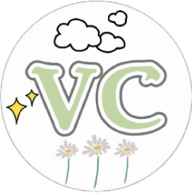
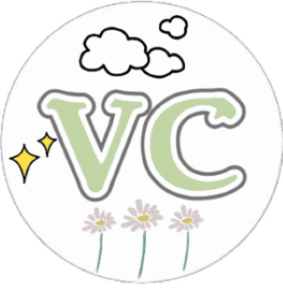
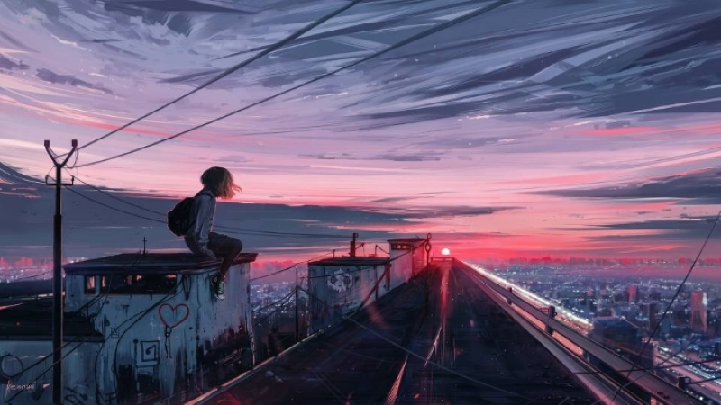

个人简介
本名韦茜茜，广西人，出生于2002年9月26日，现就读于中南财经政法大学，信息管理与信息系统专业，2020级本科生。
我的别名叫维C，因为我的名字拼音是weixixi。
平时喜欢看电影、拍照、跳舞，正在努力提升自己在这些方面的能力。
性格温和好相处，待人真诚友善，做事认真负责。
我有两个八年闺蜜，我认为友谊是我人生中必不可缺的一部分。


本名韦茜茜，广西人，出生于2002年9月26日，现就读于中南财经政法大学，信息管理与信息系统专业，2020级本科生。
我的别名叫维C，因为我的名字拼音是weixixi。
平时喜欢看电影、拍照、跳舞，正在努力提升自己在这些方面的能力。
性格温和好相处，待人真诚友善，做事认真负责。
我有两个八年闺蜜，我认为友谊是我人生中必不可缺的一部分。

本个人网站主要分为五个部分，即首页、VC上过的课程、VC吃过的美食、VC看过的电影、VC拍过的照片。这些都是我的日常生活。
虽然我的生活很平凡很简单，但是我也喜欢记录下来。本网站不仅是为了让他人了解我，更是为了让我以后能更好地回忆自己的生活。
